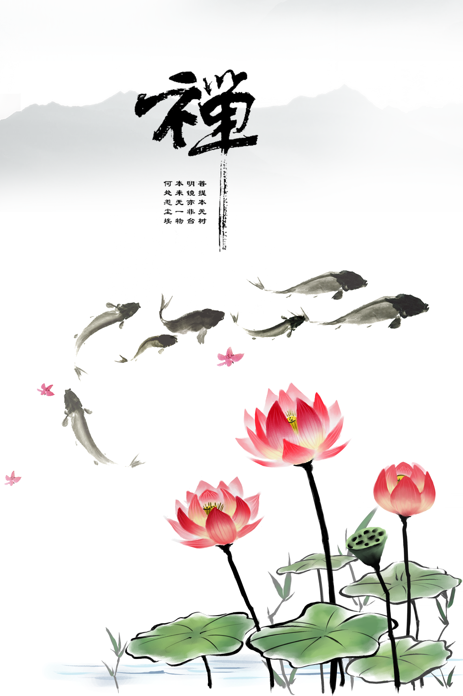

传统文化历史悠久
传统文化（Traditional culture)就是文明演化而汇集成的一种反映民族特质和风貌的民化，是民族历史上各种思想文化、观念形态的总体表征。世界各地，各民族都有自己的传统文化。中国的传统文化以儒道互补为内核 [1] ，还有墨家、法家、名家、释教类、回教类、西学格致类、近代西方文化等文化形态，
包括：古文、诗、词、曲、赋、民族音乐、民族戏剧、曲艺、国画、书法、对联、灯谜、射覆、酒令、歇后语等。
传统文化的全称大概是传统的文化（Traditional Culture）,落脚在文化， 对应于当代文化和外来文化而谓。其内容当为历代存在过的种种物质的、制度的和精神的文化实体和文化意识。例如说民族服饰、生活习俗、古典诗文、忠孝观念之类；也就是通常所谓的文化遗产。

中国人眼中的传统文化
中华传统文化，是中华文明成果根本的创造力，是民族历史上道德传承、各种文化思想、精神观念形态的总体。中华传统文化是以孔子为代表的儒家文化为主体，中国约5000年历史中延绵不断的政治、经济、思想、艺术等各类物质和非物质文化的总和。
中华传统文化亦叫华夏文化、华夏文明，是中国5000年优秀文化的统领。而流传年代久远，分布广阔，文化是宇宙自然规律的描述，文化是道德的外延；
文化自然本有，文化是生命，生命是文化；文化是软实力，是决定一切的内在驱动力； 文化又是社会意识形态，是中华民族思想精神，是社会政治和经济的根本。